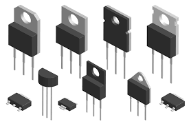
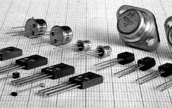
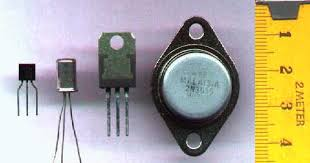

Transistor
RIO DE JANEIRO, 27 DE MARÇO DE 2025
O transistor é um componente eletrônico que começou a
popularizar-se na década de 1950, sendo o principal responsável pela revolução da eletrônica na década de 1960.
Clique aqui para acessar o google


